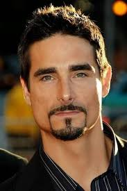

Mi historia comienza el 23 de abril del 2007
En el hospital de la chaio en kennedy
y aunque no empece mi vida de una forma saludable
a mis 20 dias de haber nacido se descubre que mi corazon
de pollito no funcionaba como deberia
el resto de esta historia la contare en el apartado
de eventos de mi vida
Origen de mi nombre
Pues resulta que mi mamá era muy fan de los "Backstreet Boys"
y habia un integrante llamado Kevin
mas exactamente "Kevin Richardson"
aqui una foto del cantante

Gracias a él tengo mi nombre